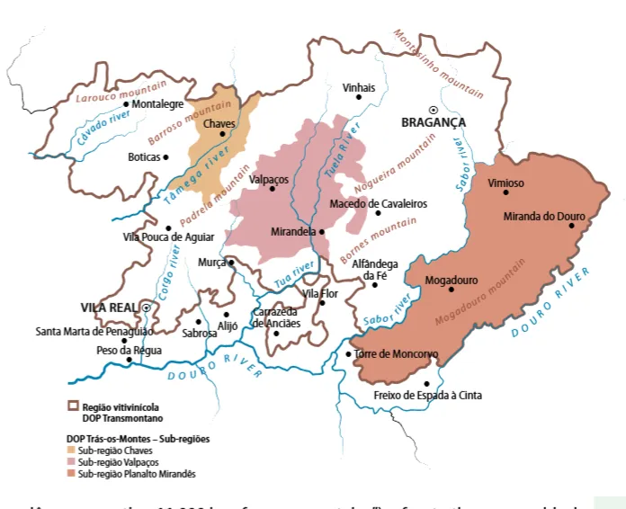

Chapter 4 · The Portuguese wine regions
Trás-os-Montes Wine Region
Key figures (2022)
Viticultural area: 9,701 ha (IVV); 11,010 ha (CVRTM)
Total Production: 68,600,000 litres ?
Average yield: 7,070 litres/ha ?
Certified wine types: 83%
History
The (Neolithic) presence of Vitis silvestris with possible use by humans has not been sufficiently studied, but vine cultivation and production in the Trás-os-Montes region during the Roman occupation has been proven. Because of its low population density, viticulture in this region was primarily orientated towards producers’ own consumption and at best, towards regional supply. With the improvement in trade routes, tourism and scientific studies, it has been increasingly acknowledged that the wines of the region of Trás-os-Montes are quite different from one another, depending on the terroir in which they are produced; some of excellent, and some of extraordinary, quality. Research and professional training is provided by the Universidade de Trásos-Montes e Alto Douro (University of Trás-os-Montes e Alto Douro). Nevertheless, its own designated region was created in 1989 by the Comissão Vitivinícola Regional de Trásos-Montes (“Regional Vitivinicultural Commission of Trás-os-Montes”), abbreviated to CVRTM, who are responsible for the DO Trás-os- Montes Denomination of Origin and the IG Transmontano Geographical Indication. This body has been the officially recognized certification authority since 2010. This region is sub-divided into three subregions: Chaves, Valpaços and Planalto Mirandês, representing 11,000 ha of vineyards.

Terroir
Climate Köppen-Geiger classification:
Csb with Csa in some neighbouring areas. The climate has savanna characteristics. Separated by a mountain range from the Atlantic climate influence in the west, the region is affected by a continental influence. It is hot every month, with a rainy and dry season. The average annual temperature for Trás os Montes is 27 °C. It receives 1,120 mm of rainfall annually. For 86 days of the year, it receives no rain, while the average humidity is 80 per cent and the UV index is 7. MCC System indices (Tonietto & Carbonneau, 2004): heliothermal idenx (HI): -1, cool night index (FI) +2, dryness index (DI): +1. Frost at the beginning of spring and risk of sporadic hailstorms. Only the Valpaços subregion is rich in water resources, situated as it is on a plateau. The River Douro influences viticulture in the Planalto Mirandês subregion. Geology
Vineyard elevation: Mostly between 350 and 800 metres.
Soil science: The name Trás-os- Montes (literally, “behind the mountains”) refers to the geographical location of this vast region: It is situated beyond the Marão and Alvão mountain ranges, north of the Douro River, east of the Minho River, and extends to the Spanish border which confines it in the north. The soils vary greatly from one subregion to another. The three subregions each have their own particular characteristics. They begin in the west, where Chaves has predominantly alkaline granitic soils, mixed with metamorphic schist, and granite-schist complexes in some areas with high levels of natural radioactivity. From a morphological point of view, granite is a perplexing rock, at once hard and friable in texture, and both coarse and finegrained. Alongside Precambrian and archaic schist there is a small area with calcareous gneisses and alluvium spots. The soils of the Chaves plain are very fertile, and classified as Grade 1. Here, vineyards are planted on the slopes of small valleys where the tributaries of the Tâmega river flow. Traditional vineyards cover mainly cliff terrain and have been planted in contoured terraces. Labour is done by the farmer with the aid of animal traction, usually donkeys. The Mirandela plateau is a vast area with cold zones and others in the south with hotter summers, near the cliffs of the River Douro. Valpaços has gentle slopes that are excellent for wine quality, with non-humid lithic soils of granite and brown or red Mediterranean soils of schist and gneiss.
Types of wine produced
Transmontano IG wine or Transmontano Regional Wine:
Red, white and rosé.
Trás-os-Montes DO: Red, white, rosé, sparkling.
DO sparkling wines (VEQPRD)
DO liqueur wines (VLQPRD)
Aguardente de Vinho (brandy from wine spirit)
Aguardente Bagaceira (grape marc spirit)
Regional contacts
Technical information: Comissão Vitivinícola Regional de Trás-Os-
Montes (Regional Vitivinicultural Commission Of Trás-Os-Montes) Bairro do Bonito – Edifício IVV, 5430-429 VALPAÇOS, Tel.: 278 729 678,
Website: www.cvrtm.pt, e-mail: cvrtm@sapo.pt
Enotourism information:
Porto Wine Route, Largo da Estação 5050-237 Peso da Régua, Tel. 254 324 774, reservas@rvp.pt. Turismo Trás-os-Montes, Rua 25 de Abril, Edf. Alexandre D’arcos, 5210-178 MIRANDA DO DOURO, Bragança; geral@webdouro.com; Tel +351 302 099 933 Cultural information on the wine
of the region: Confraria Enófila e Gastronómica de Trás-os-Montes e Alto Douro (The Trás-os-Montes e Alto Douro Confraternity of Oenophilists and Gastronomists), Rua Conselheiro Abílio Beça 150, 5370-324 MIRANDELA Institutions of higher learning and
viticultural research: Universidade de Trás-os-Montes e Alto Douro UTAD (University of Trás-os-Montes e Alto Douro), Quinta dos Prados 5000-262 VILA REAL, Tel. 259 350 000, www.utad.pt; Escola Superior Agrária de Bragança (Polytechnic Institute of Bragança - Agricultural School), Campus de Santa Apolónia (Santa Apolónia Campus) – Apartado 1172, 5301-855 BRAGANÇA; Tel.: (+351) 273 303 200 http://esa.ipb.pt.
Certification authority Comissão Regional de Trás-os-Montes – CVRTM (Regional Vitivinicultural Commission of Trás-os-Montes), Bairro do Bonito – Edifício IVV, 5430-429 VALPAÇOS, Tel.: 278 729 678, Fax: 278 729 678
Website: www.cvrtm.pt, e-mail: cvrtm@sapo.pt
Producer and bottler information:
http://www.ivv.min-agricultura.pt/ np4/1736.html, Yearbook, p. 118.
Botany (biodiversity features) and authorised varieties
Legal basis: Ministerial Order N.º 1203/2006 of 9 November and Decree-Law No 212/2004 of 23rd August.
Red wines: Alicante-Bouschet, Alvarelhão, Aragonez (Tinta-Roriz), Aramon, Bastardo, Cabernet Franc, Cabernet Sauvignon, Camarate, Carignan, Castelão, Cornifesto, Donzelinho Tinto, Gamay, Gorda, Grand Noir, Jaen, Malvasia Preta, Marufo, Merlot, Moscatel Galego Roxo, Mourisco de Semente, Mourisco de Trevões, Pinot Noir, Rufete, Sousão, Syrah, Tinta Barroca, Tinta Carvalha, Tinta Francisca, Tinto Cão, Touriga Franca, Touriga Nacional, Trincadeira (Tinta Amarela), Vinhão, Donzelinho Roxo, Gewürztraminer and Moscatel Galego Roxo (Moscatel Roxo).

White wines: Arinto (Pedernã), Azal, Branda, Carrega-Branco, Cercial, Chardonnay, Chasselas, Códega do Larinho, Dona Branca, Donzelinho Branco, Dorinto, Fernão Pires (Maria Gomes), Folgasão, Godelho, Gouveio, Malvasia Fina, Malvasia Parda, Malvasia Rei, Moscadet, Moscatel Galego Branco, Mourisco Branco, Pinheira Branca, Pinot Blanc, Rabigato, Riesling, São Mamede, Sauvignon, Semillon (Esgana Cão), Síria (Roupeiro), Tamarez, Verdelho, Viosinho and Vital.
Prestigious wineries
in the region: The Adega Cooperativa de Valpaços
currently has around 2,000 members whose collective annual average production of 7,500,000 kilograms of grapes is made into Valpaços wine. The Adega Cooperativa do Rabaçal,
C.R.L. has 400 members who hail from the municipalities of Vinhais, Valpaços, Mirandela and Macedo de Cavaleiros, from which it receives 1.5 million kilograms of grapes annually. The Cooperativa Riba Douro currently has more than 2,300 members. Average annual production in recent years has been 3 million litres of wine.
Olivia Winery has 65 hectares of vineyards from which it produces wine.